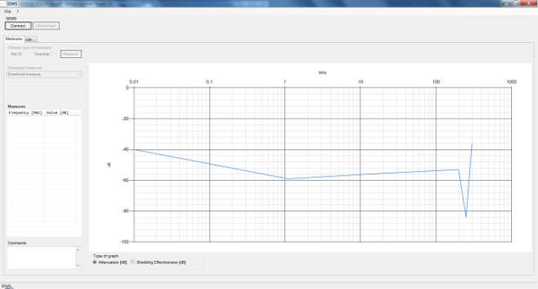
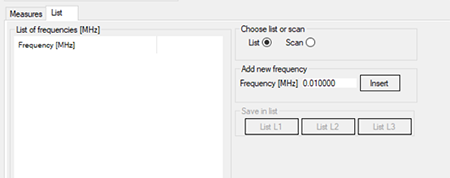
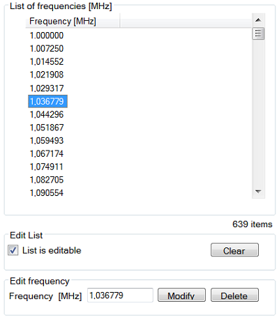

When setting up the transmitter (Tx) and receiver (Rx) from the coherent noise tool kit for measurement, if frequencies are not correct, you can enter frequencies using the SEMS software.
Procedure
Open the SEMS software.
Connect the USB serial adapter to the computer and to the RS232 connector on the coherent noise tool kit receiver (Rx).
Power cycle the Rx by pressing the power button.
Click the Connect button in the SEMS software.
Note If the connection is successful, the Connect button will be disabled and SEMS Connected will show in the bottom left corner of the screen.
Figure 1. SEMS software

To enter frequencies, click List.
Below Add new frequency, enter the value in MHz and select Insert (see Frequencies).
Figure 2. Entering frequencies with SEMS software

Table 1. Frequencies
List selection
Product type
Frequencies
L1
1.5T Products
63.86 MHz
51.00 MHz
76.60 MHz
L2
3.0T Products
127.72 MHz
102.20 MHz
153.30 MHz
L3
7.0T Products
238.4 MHz
238.9 MHz
298.0 MHz
Note To edit or remove a frequency value, first select the frequency and the List is editable box. To modify the frequency, below Edit frequency, enter the new frequency value in MHz and click Modify; to delete the frequency, click Delete.Figure 3. Modifying frequencies with SEMS software

When the three frequency values are entered, the Save in list option will show.
Save the frequencies to the Rx by clicking List L1, List L2, or List L3.